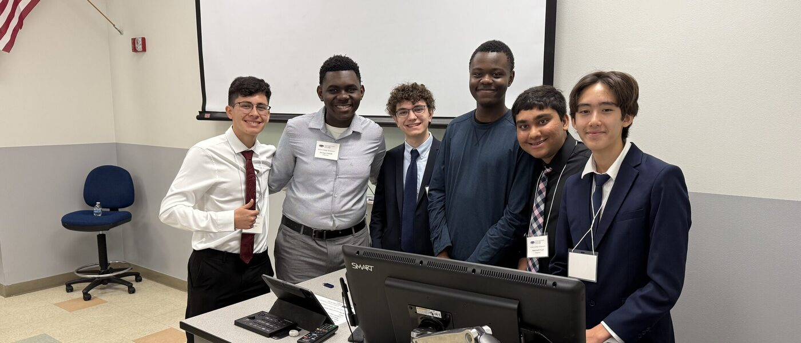

Florida Atlantic University · 2024 – 2025
AI detectors, and the countermeasures against them.
If a detector can be talked out of its own verdict, how much is the verdict worth?

Large language models can now produce text that is hard to tell from human writing, which is what created the market for AI text detectors — and, immediately afterwards, the market for ways around them. We set out to measure how well the second actually works against the first.
The paper evaluates two evasion techniques. Iterative sampling repeatedly paraphrases a passage and re-checks it against a detector until it hits a target detectability score. Coherence and Perplexity Based Optimization (CPBO) builds a branching tree of candidate continuations and selects among them by weighting toward higher perplexity while pruning for coherence — perplexity being the signal most detectors lean on.
Method
Human-written corpora came from Kaggle. Three models — Gemini 2.0 Flash, Gemini 1.5 Pro and GPT-4o — paraphrased that text with no special prompting to produce 35 AI-augmented passages, each then run through both evasion methods. Every iteration was scored against three detectors (RoBERTa 105M, ZeroGPT, GPTZero) and evaluated on word frequency, perplexity, coherence following the entity-based approach of Barzilay and Lapata (2005), and text style transfer measured with BLEU.
What we found
- Iterative sampling reduces detectability most clearly on older detector architectures, RoBERTa above all.
- The gains plateau. Almost all the benefit arrives in the first refinement pass rather than accruing over successive ones.
- GPTZero stayed saturated near a detection score of 1.0 across every iteration and all three paraphrasing models — R² of 0.004, 0.004 and 0.008. Iterative sampling had essentially no effect on it.
- Style is the cost. Text style transfer scores decline steadily with each pass, so repeated paraphrasing buys lower detectability by eroding resemblance to the original writing.
- CPBO results are preliminary, but the branching procedure does reliably surface higher-perplexity continuations.
We proposed the iterative sampling approach independently in March 2024; in January 2025 we found that a closely related procedure had since been described by Sadasivan et al. (2025).
Limits
Compute was the binding constraint, and the CPBO conclusions in particular stay tentative until more data is collected. The findings are specific to the three detectors we tested and may not carry over to other architectures — watermarking approaches in particular, which embed a statistical signal at generation time rather than inferring one after the fact.
Tested.
2
Evasion techniques evaluated
3
Detectors: RoBERTa 105M, ZeroGPT, GPTZero
35
AI-augmented passages, three paraphrasing models
0.004
R² for GPTZero — no measurable effect
Most of the benefit arrives in the first pass. Everything after that costs you your style.
Iterative sampling, across three paraphrasing models
Credits.
Assessing the Efficacy of AI Detectors and Countermeasures in Generative AI — Jason Makai Pindell, Amarnath Patel, Alexander Castronovo, Jossaya Camille, Zachary Lopez and Thandi Menelas. Florida Atlantic University High School, the H. L. Wilkes Honors College, and FAU High School in partnership with the Max Planck Academy for Neuroscience. Supervised by Tucker Hindle. Grant-funded, with HPC access.
Presented at the Wilkes Honors College Undergraduate Research Symposium, March 2025.